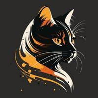

🐱 Mitos y Realidades sobre Gatos 🐱
❌ Mito: Los gatos siempre caen de pie
✅ Realidad: Aunque tienen un reflejo de enderezamiento que les permite girar en el aire:
- Necesitan al menos 30 cm de altura para girar su cuerpo
- Caídas desde pisos altos pueden causar el "síndrome del gato paracaidista"
- 1 de cada 3 gatos sufre lesiones en caídas desde altura
❌ Mito: Los gatos negros dan mala suerte
✅ Realidad: Su significado varía por cultura:
- Japón: Atraen pretendientes
- Inglaterra: Regalarlos trae prosperidad
- Egipto: Encarnación de la diosa Bastet
- EE.UU.: Adopción más difícil por supersticiones
❌ Mito: Los gatos son independientes y no necesitan cariño
✅ Realidad: Forman vínculos profundos:
- Segregan oxitocina (hormona del amor) al interactuar con sus dueños
- Pueden sufrir ansiedad por separación
- El 65% duerme junto a sus humanos
- Frotan su cara para marcar como familia
❌ Mito: Los gatos odian el agua
✅ Realidad: Aunque muchos gatos evitan mojarse, no todos lo odian:
- Algunas razas, como el gato bengalí o el turco van, disfrutan nadar
- Muchos toleran baños si se acostumbran desde pequeños
- Les gusta observar o jugar con agua corriente (grifos, fuentes)
- Su rechazo suele deberse a experiencias negativas o falta de costumbre

Los gatos tienen características fascinantes que a menudo se malinterpretan
|